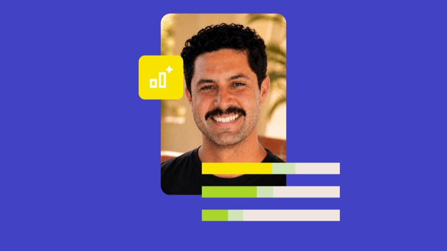
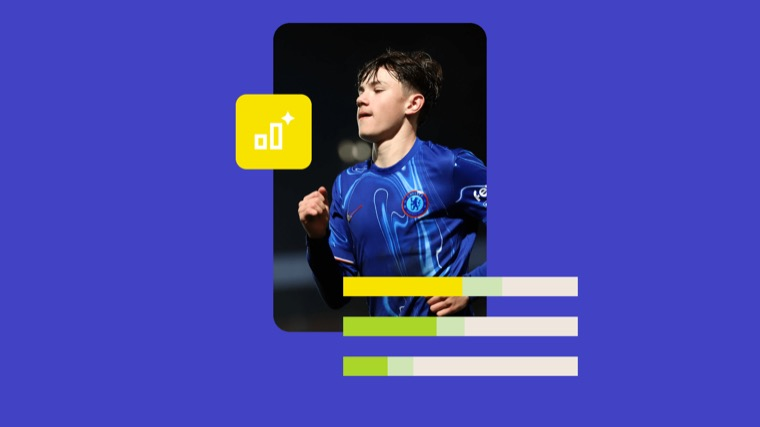
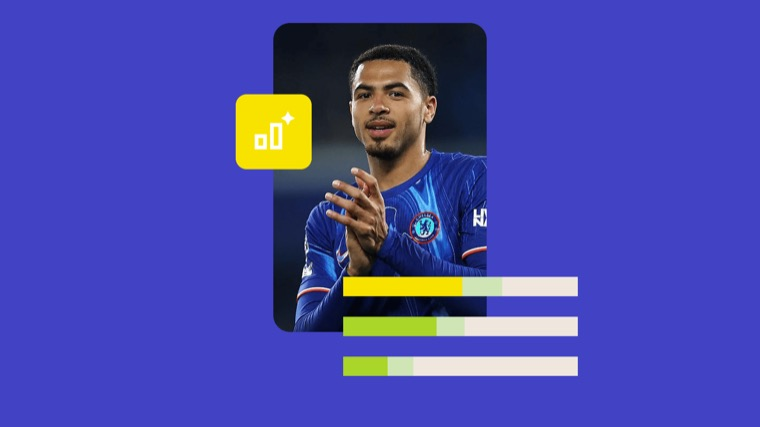
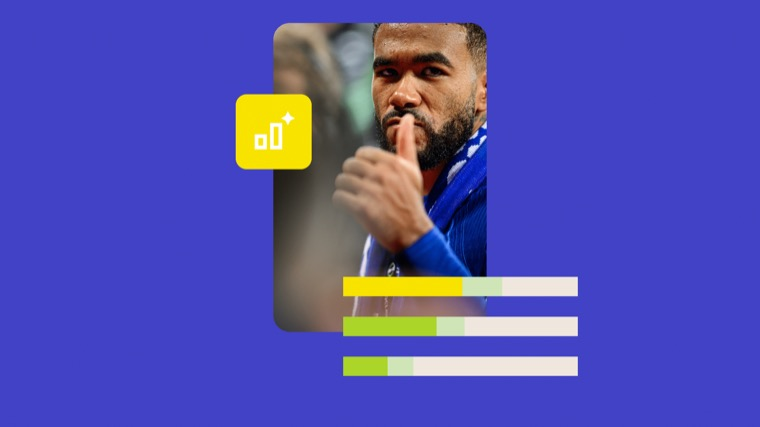

Training Ground Guru Academy Productivity Rankings
Training Ground Guru · 2025/26
Academy Productivity Rankings
I led Training Ground Guru’s study of how academies in England and Wales develop senior footballers. I built an AI-assisted workflow to trace each player’s academy history and share credit across the clubs that trained him. Plymouth Argyle commissioned the first club report to benchmark its academy against its peers.
From player to ranking
- Trace the playerStart with the player’s senior record and trace academy spells in public sources.
- Check the evidenceThe AI agent cross-checks identity and dates, follows gaps and links each finding to a source.
- Share the creditUse Opta’s league strengths and minutes played to score the senior season. Split the points by time at each academy.
The TGG series
I wrote the methodology and the complete table, and co-authored three analyses.
The public top 20 and the clubs that moved up when the study expanded to Wales and 23 senior competitions.
7 Sep 2026 · With Ian Westbrook
How I reconstructed individual academy spells, weighted senior competitions and allocated credit between clubs.
7 Sep 2026 · Sole author · TGG members
All 89 academies, with each club’s score broken down by the competitions its graduates reached.
7 Sep 2026 · Sole author · TGG members
A younger cohort gives a different view of which academies are producing senior players now.
17 Sep 2026 · With Ian Westbrook and Simon Austin · TGG members
Our league-by-league breakdown shows how Premier League graduates drove Chelsea’s advantage over Arsenal.
23 Sep 2026 · With Ian Westbrook · TGG membersPress coverage
- BBC Sport Chelsea top national academy rankings again
- Southampton Daily Echo My comments on Southampton’s eighth-place finish
Inside the masterclass
I presented the research to Training Ground Guru and Twelve Football members on launch day. This slide shows how the agent investigated conflicting accounts of a player’s early career and recorded the evidence behind each academy spell.
Masterclass announcement · My launch recap · Read my methodology

How clubs used the rankings
Plymouth Argyle commissioned the first bespoke report. Across 23 pages, we compared the academy with named peers and broke down which graduates, leagues and age groups contributed to its score. Each report includes a call with me to discuss the findings. TGG’s announcement and sample report pages